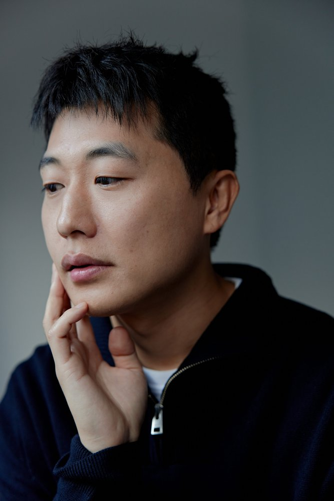

함께 키워가는 브랜드.
저는 사업의 뼈대와 방향을 잡고, AI를 활용하는 운영 파트너와 함께 브랜드를 키워가고 싶습니다.
그림과 장면,
문장으로.
만들고,
이어가는 일.
알마는 실제 제품 사진을 담았습니다. 나머지 브랜드 표지는 타이포그래피 시안입니다.

창업에서
매각까지.
B2C · B2B · B2G 운영
3회에 걸친 누적 투자 유치
창업과 운영 과정에서 채용
트로스트 매각
More to make.
More to explore.
저는 사업의 뼈대와 방향을 잡고, AI를 활용하는 운영 파트너와 함께 브랜드를 키워가고 싶습니다.
그림을 전시하거나 독립영화를 함께 만드는 일. 다양한 사람들과 예술적 시도를 이어가고 싶습니다.
앞으로는 유튜브로도 표현을 넓히려 합니다. 재스퍼의 실험실에서는 다양한 직업의 사람들과 만나 이야기를 나누고 싶습니다.
Let’s make
something.
브랜드를 키우고, 예술을 시도하고.
다음 여정을 함께할 사람들을 기다립니다.
현재는 신청 흐름을 확인하는 시안이며 실제 접수는 연결 전입니다.